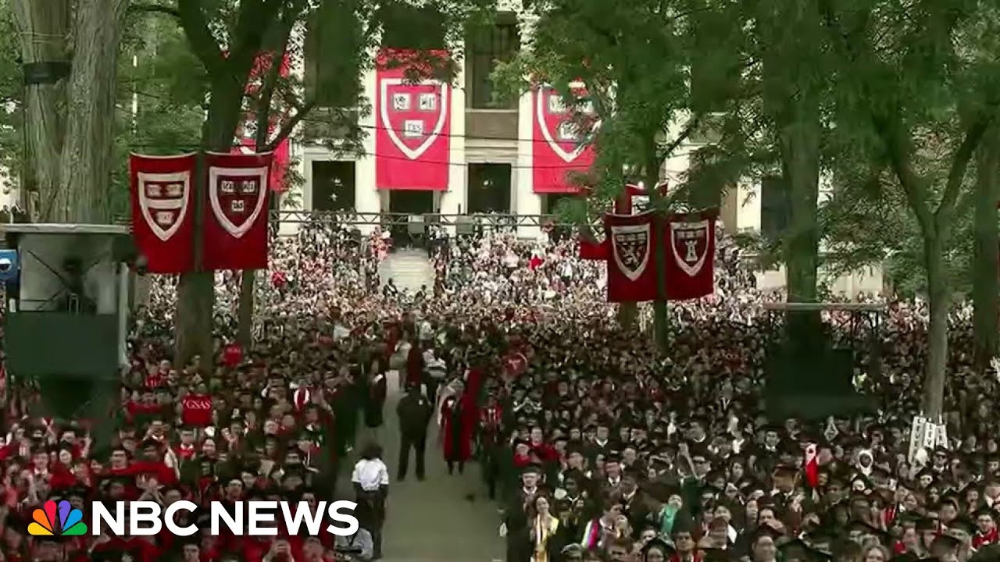

【欢迎回到节目。哈佛大学毕业日当天，随着毕业典礼的进行，这所常春藤盟校的律师们在与特朗普政府不断升级的法律斗争中取得了暂时胜利。波士顿一名联邦法官延长了临时禁令，阻止特朗普政府撤销哈佛招收国际学生的资格。该裁决出台前，特朗普政府声称将给予校方30天时间对撤销决定提出异议。校园内，哈佛校长艾伦·加伯在欢迎全体毕业生时获得全场起立鼓掌——包括来自本地、全美乃至全球的2025届毕业生，这本应是常态。NBC记者安东尼娅·希尔顿与前联邦检察官、法律分析师卡罗尔·兰姆现从哈佛校园连线。安东尼娅，请描述今日毕业典礼的氛围？这里气氛既欢庆又充满抗争——所有师生家庭都清楚，当他们在校园合影留念时，几英里外的法庭上校方正与特朗普政府律师激烈交锋。该校27%的学生为国际生，因此今日超过四分之一的参与者切身感受到危机。以往在巴以冲突等问题上立场对立的学生们，现正团结应对这一"生存威胁"。应届毕业生里奥表示："我们庆祝四年成就，但特朗普的威胁笼罩着一切——失去国际生，哈佛将不复本色。我们可能是最后一批国际生，秋季返校时或许再无同窗。"学生们担忧暑期回国的同学可能被拒入境，虽感激30天缓冲期，但也意识到这将是一场持久战。校方将此视为阶段性胜利，但正暗中筹备长期抗争：动员校友捐款维持可能失去联邦资助的实验室运作（涉及量子物理、癌症研究等关键领域），同时组建律师团队应对更广泛的高教界斗争。法律专家卡罗尔指出政府程序违规——国土安全部未遵守需给予30天申诉期的自身条例，法官维持现状并准备初步禁令。此案可能上诉至最高法院，因政府持续针对哈佛制造混乱。哈佛提出三大诉由：行政程序违规、第一修正案权利受侵（因政治观点遭报复）、以及行政行为武断专横。此案与哈佛其他法律斗争（如联邦科研资金冻结）相互关联，揭示政府以"反犹"和"觉醒主义"为借口的行动日益偏离正当性。】
Summary: Welcome back.
摘要： 欢迎回到节目。

⏱️ Estimated Reading Time: 13 min
It's graduation day at Harvard University and as commencement ceremonies were underway, lawyers for the Ivy League school won a temporary victory in their ongoing and escalating legal battle with the Trump administration.
哈佛大学毕业日当天，随着毕业典礼的进行，这所常春藤盟校的律师们在与特朗普政府不断升级的法律斗争中取得了暂时胜利。
A federal judge in Boston extended a temporary order blocking the Trump administration from revoking Harvard's ability to enroll international students.
波士顿一名联邦法官延长了临时禁令，阻止特朗普政府撤销哈佛招收国际学生的资格。
That ruling came after the Trump administration said it would give the university 30 days to challenge the revocation.
该裁决出台前，特朗普政府声称将给予校方30天时间对撤销决定提出异议。
On campus, Harvard University President Alan Garber received a standing ovation as he welcomed all members of the graduating class.
校园内，哈佛校长艾伦·加伯在欢迎全体毕业生时获得全场起立鼓掌。
members of the class of 2025 from down the street across the country and around the world around the world just as it should be.
包括来自本地、全美乃至全球的2025届毕业生，这本应是常态。
Joining me now from the Harvard University campus is NBC News correspondent Antonia Hilton and former US attorney and NBC News legal analyst Carol Lamb.
NBC记者安东尼娅·希尔顿与前联邦检察官、法律分析师卡罗尔·兰姆现从哈佛校园连线。
Thanks to both of you for being here in this extraordinary story.
感谢两位参与这场非凡事件的报道。
Antonia, let me start with you.
安东尼娅，首先请您谈谈。
You were there.
您当时在场。
It was graduation day.
正值毕业典礼。
What was the atmosphere like on campus today?
今日校园氛围如何？
Kristen, I have been describing the atmosphere here as celebratory but also defiant because I have not found a single student or family member on campus who was not aware of the fact that while they were reflecting on their four years as Harvard students here trying to take pictures with their family members that there were lawyers just a couple miles down the road going into court to go toe-to-toe with Trump administration lawyers.
克丽丝汀，我形容这里的气氛既欢庆又充满抗争——所有师生家庭都清楚，当他们在校园合影留念四年哈佛时光时，几英里外的法庭上校方正与特朗普政府律师激烈交锋。
And of course about 27% of the student body here at this school is international.
该校27%的学生为国际生。
So it's highly personal for more than a quarter of the people who are part of the celebration today.
因此今日超过四分之一的参与者切身感受到危机。
The students who have been at times really diametrically opposed to each other, particularly when it comes to the issue of the war in Israel and Gaza, they've now started coming together and uniting around what they say has become an existential threat.
以往在巴以冲突等问题上立场对立的学生们，现正团结应对他们所称的"生存威胁"。
Take a listen to a conversation I had with one senior named Leo this morning right before he processed into graduation.
请听今早毕业生里奥参加典礼前与我的对话。
We are all obviously celebrating our own achievements today for for our four years.
"我们当然在庆祝四年成就。"
But I think that Trump's threat against Harvard are truly hanging over this because without the international students, Harvard is not Harvard anymore.
"但特朗普的威胁笼罩着一切——失去国际生，哈佛将不复本色。"
And you know, we might be the last international class in a while.
"我们可能是最后一批国际生。"
When people come back next semester, they might not be any international students left.
"秋季返校时或许再无同窗。"
So that's sort of the the the other piece that's on everyone's mind.
"这是众人心头的阴云。"
So, after the party tonight, what actually happens to the 17 and 18 year olds who are hoping to come here for the first time in the fall?
"今晚派对结束后，那些期待秋季入学的十七八岁新生将面临什么？"
For all our classmates who maybe went home to visit their families in other countries, but are worried that when they come back to the US, they could be turned away at the border because something changes in the courts in the coming days.
"暑期回国的同学可能因未来几日法庭裁决变化被拒入境。"
They're grateful for this 30-day window here and that this judge has kept the temporary restraining order in place.
"他们感激30天缓冲期和法官维持的临时禁令。"
But they're very aware too that this is going to be a long-term battle, that the Trump administration may make other moves in addition to this one.
"但也清醒意识到这将是一场持久战，特朗普政府可能采取更多行动。"
So that sense of anxiety, Kristen, I think it's going to be here for a while.
"这种焦虑短期内不会消散。"
Yeah, it's just extraordinary to hear that students say we might be the last international class for a while.
学生们自称"可能是最后一批国际生"令人震撼。
Antonia, how is the university reacting overall to today's ruling?
安东尼娅，校方对今日裁决总体反应如何？
I would say the vast majority of students, uh, faculty members, um, leadership here, you know, they're celebrating this as a temporary win, but the real behind-the-scenes conversation, Kristen, is that there is a need to sort of build the endurance for a fight that is going to last three and a half years.
绝大多数师生领导视此为阶段性胜利，但幕后讨论焦点是需为持续三年半的斗争储备耐力。
So that means they are marshalling alums to donate sums of money so that certain labs can continue to do their work if they completely lose their federal funding.
这意味着正动员校友捐款，以便某些实验室在失去联邦资助后仍能运作。
I have spoken to quantum physics students, people who do genetics and cancer research here who are worried that the life-saving work that they do may not be able to continue.
量子物理、基因与癌症研究者担忧救生研究可能中断。
So there's an effort to figure out well how do we keep our our academic programs the sort of lifeblood of the school here in present while alsoing also gathering a team of lawyers who are going to see this school through because they see it as bigger than just Harvard and really as just the beginning of a broader fight against higher ed.
校方正设法维持学术命脉，同时组建律师团队应对这场超越哈佛、关乎整个高教界的斗争。
Antonio Hilton, thank you so much for being there on the ground for your great reporting.
安东尼娅·希尔顿，感谢您的出色现场报道。
We really appreciate it.
我们非常感激。
Carol Lamb, let me head over to you.
卡罗尔·兰姆，现在请您分析。
So, just before the hearing started today, we learned that the Trump administration is giving Harvard 30 days to respond to why the government shouldn't revoke the university's ability to enroll international students.
今日听证会前，我们获悉特朗普政府给予哈佛30天答辩期。
Do you view this as an attempt to try to prebut whatever the judge ruled today?
您认为这是否意在预先反驳法官裁决？
How do you view that action?
您如何看待此举？
Well, Kristen, let me just say that from a competency in court point of view, this has been a complete embarrassment for the government.
从法庭表现看，这完全是政府的尴尬。
when a week ago uh the Department of Homeland Security told Harvard, "We are revoking your ability to have international students."
一周前国土安全部告知哈佛"将撤销招收国际生资格"。
Apparently, the government didn't realize that it was in violation of its own regulations.
政府显然未意识到其违反自身条例。
Its own regulations, DSH, DHS regulations say you give notice to a university, then they have 30 days to respond, and then it goes through at least two levels of appeal within the agency, and that's before you even get to a court.
国土安全部条例规定需提前30天通知校方并经过两级内部申诉，之后才进入司法程序。
So, uh, now, uh, Harvard pointed that out in their lawsuit, and now the Department of Homeland Security has had to say essentially, "Oops, you caught us. Uh, okay, we'll give you your 30 days notice."
哈佛在诉讼中指出这点后，国土安全部不得不承认失误并给予30天通知期。
And they said, "Go ahead and lift the temporary restraining order."
他们要求"解除临时禁令"。
But the judge wasn't having any of that.
但法官未予采纳。
The judge said, "No, I want the status quo status quo to remain."
法官表示"维持现状"。
And she left the temporary restraining order uh there.
保留了临时禁令。
and she said, "You guys can come up with a language for a preliminary injunction, but I am going to enter a preliminary injunction to make sure the status quo remains as is."
她要求双方拟定初步禁令措辞，但明确将颁布禁令维持现状。
Carol, is this case going to go to the Supreme Court, do you think?
卡罗尔，您认为此案会上诉至最高法院吗？
Uh, I think there's a good possibility it will because uh this administration is simply not giving up on what appears to be sort of a temper tantrum against Harvard and it's going to keep fighting on all of these fronts.
很有可能，因政府持续针对哈佛发泄情绪，并将在各战线继续斗争。
And the more chaos it can introduce with respect to the international student community, the happier it appears to be.
其似乎乐见给国际生群体制造更多混乱。
So even if it loses ultimately down the road, it's happy to have that sort of uh that sort of craziness take place that throws students and faculty and the school off balance.
即便最终败诉，他们也乐于通过这种疯狂举动扰乱师生与校方。
That is in effect part of their goal.
这实际是其目标之一。
Let me ask you about the core argument that Harvard is making essentially saying that the Trump administration is violating its first amendment rights.
哈佛核心论点是特朗普政府侵犯其第一修正案权利。
I know you've analyzed how the government is actually carrying out its case.
您已分析政府诉讼策略。
But how strong of a case do you think Harvard has here?
您认为哈佛的论据有多强？
Yeah, Harvard really raised three arguments.
哈佛提出三大诉由。
One was the argument I've already explained, which is that DHS violated its own rules and regulations, which they've now had to backpedal on.
一是国土安全部违反自定条例（政府已在此退让）。
Um I'm sorry but DHS has backpedalled on that on that front.
国土安全部在这方面已退让。
Uh they've Harvard has also alleged a first amendment violation that essentially Harvard and its students have the right to express themselves express different views, express different political views and essentially what the administration is saying is that we don't like those views and as a result we're just going to uh take this broad brush and say you can't admit any international students.
二是第一修正案权利受侵——哈佛师生有权表达不同政见，而政府因不喜这些观点就全面禁止招收国际生。
Um, finally, it uh Harvard also alleges a violation of the Administrative Procedures Act that this is an arbitrary and capriccious act on the part of the administration.
三是违反《行政程序法》，称此举武断专横。
Do you believe, Carol, that this case could actually have an impact on some of the other legal battles and there are a number of them involving the Trump administration?
您认为本案会影响特朗普政府的其他诉讼吗？
Well, a lot of them are intertwined.
许多案件相互关联。
So uh the other significant battle that Harvard has going with the administration is this sort of freezing of grants that were promised or were in effect to uh you know by the National Institute of Health and a lot of other federal agencies that fund research at Harvard and they are making a lot of the same arguments a lot of them being made in front of the same judge Judge Burroughs in Boston.
哈佛与政府关于联邦科研资金冻结的诉讼正由同一位波士顿法官审理，且论据相似。
So there is an intertwined uh relationship among all of these cases and it also does inform the judge as to sort of what the administration's broader attempt is here and you know it gets farther and farther away from their stated justification which is anti-semitism and wokeness on the university.
这些案件帮助法官理解政府的广泛意图，其所谓"反犹"和"觉醒主义"的借口日益牵强。
you know what that has to do with funding of uh critical medical research or scientific research as Antonio pointed out um is really called into question here.
正如安东尼娅所言，这些借口与关键医学科研资助的关联性令人质疑。
All right, Carol Lim, thank you so much.
非常感谢卡罗尔·兰姆。
We really appreciate you're joining us today.
感谢您今日参与。
Thank you.
谢谢。
Thanks for watching.
感谢观看。
Stay updated about breaking news and top stories on the NBC News app or follow us on social media.
请通过NBC新闻应用或社交媒体获取最新突发新闻与头条故事。